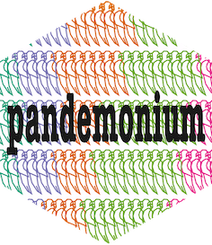

pandemonium performs hierarchical cluster analysis within a Shiny GUI. The data space should be split into two parts, for example input variables and latent variables for a statistical model. Clustering is performed using the subset of variables in the clustering space, and cluster assignments are also visualised in the linked space.
Within the dynamic GUI pandemonium performs data preparation, clustering and visualisation with interactive methods. The user can change all settings without having to to leave the GUI.
Installation
The latest release version of pandemonium can be installed from CRAN with:
install.packages("pandemonium")You can install the development version of pandemonium from GitHub with:
# install.packages("pak")
pak::pak("GabrielMccoy/pandemonium")Getting Started
We use the Bikes data example to show how the app can be used. To load the GUI with this data, the following can be used.
library(pandemonium)
pandemonium(df = Bikes$space1, space2 = Bikes$space2,
getScore = outsideScore(Bikes$other$res,"Residual"))By loading the app with the clustering space in df and the linked space in space2 the data is automatically selected in the data page. From here pressing load app will launch the analysis tab.
Within the analysis tab you can explore different visualisations and their options in each of the enclosed tabs.